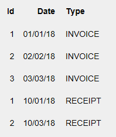
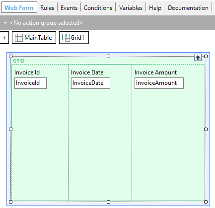
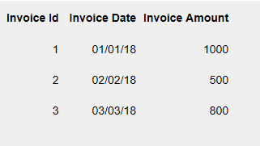

Forces the loading of a new line into the Grid control. SyntaxLoad DescriptionThe Load command can be used in the following scenarios:
Below are examples of use. Example 1: Web Panel without a base tableConsider the following two Transactions:
Invoice
{
InvoiceId*
InvoiceDate
}
Receipt
{
ReceiptId*
ReceiptDate
}
Suppose you want to define a Web Panel object with one grid that shows all the invoices data and all the receipts data, like the following image, shows:  To solve this need, one option can be to define a Web Panel without a Base Table. It must contain a grid that only includes variables. You must make sure that there are no attributes mentioned in the Web Form, Events (except those included inside For Each commands), Conditions nor Order, so that the Web Panel has not a base table. Of course, you neither can set the grid Base Trn property. Suppose the variables you include in the grid are: &Id, &Date, and &Type. Thus, the Web Panel does not have a Base Table because no attributes are present in any part where GeneXus verifies to determine a Base Table. This means that the Web Panel hasn't got automatic navigation either an automatic grid loading and you have to define the grid loading explicitly. For every Web Panel without a base table (or Panel without a base table), the Load Event will be triggered only once. Inside this event, you have to define explicitly the desired navigation and grid loading. The following code solves the described need:
Event Load
For each Invoice
&Id = InvoiceId
&Date = InvoiceDate
&Type = "INVOICE"
Load // Load command
EndFor
For each Receipt
&Id = ReceiptId
&Date = ReceiptDate
&Type = "RECEIPT"
Load // Load command
EndFor
EndEvent //Load
Note that two consecutive For each commands were defined inside the Load Event. The first For each command scans and loads the invoices data in the grid and the second For each command scans and loads the receipts data in the grid, too. As the code shows, inside each For Each command, the variables are being assigned explicitly with the instantiated attribute values (or fixed values, calculations, etc.). Once the desired values are assigned to the variables when you want to proceed to load a line in the grid with those values, you have to include a Load command. The Load command loads effectively a line in the grid, so if you forget to include it in the correct place in the code, in spite of having assigned values to the grid variables, the lines will not be loaded. Example 2: Web Panel with a base tableNow consider only the Invoice Transaction:
Invoice
{
InvoiceId*
InvoiceDate
InvoiceAmount
}
If you define a Web Panel that contains one grid that includes the InvoiceId, InvoiceDate, and InvoiceAmount attributes, GeneXus determines that the Web Panel has a Base Table and it is Invoice. This means that the Web Panel has an automatic navigation (there is an implicit For each command that scans all the stored invoices) and the grid is automatically loaded with the navigated invoices data. That is, by just defining a Web Panel with the following form (and nothing else in any other part of the object):  you will see the following result in runtime:  For every Web Panel with a base table (or Panel with base table), the Load Event will be triggered as many times as records are scanned (three times in the previous example), just before loading each record data in a new grid line. Probably you do not need to define any code inside the Load event (as in the previous example), but if you need to execute, validate or perform something before loading each line, the appropriate section to define that code is inside the Load event. Suppose that you want to show for each line a text with the following criteria:
In order to solve the described requirement, first, include a variable named &Text (based on a character data type) inside the grid. Then, as the Load Event is executed immediately prior to the addition of each line to the grid, the necessary code to evaluate the InvoiceAmount value and assign the text to the &Text variable is:
Event Load
If InvoiceAmount < 800
&Text = "Receives a gif voucher"
else
&Text = "Receives a discount voucher for the next invoice"
endif
Endevent
Important: Note that there isn't a Load command inside the Load Event code. You do not have to include it because as already explained the Web Panel has a Base Table (Invoice). So, the query to the Invoice physical table is automatic as well as the loading of the lines in the grid (and just before the loading of each line, the Load Event is executed; thus, the &Text variable will have the corresponding text just before each line is automatically loaded and the desired text will be displayed). In which cases is it necessary to use the Load command?Only if you need to evaluate before loading each line if you want to load it or not. For example, if for each navigated invoice you have to validate several things with a procedure and after that, depending on the procedure returned value, you have to evaluate if proceed to load the line into the grid or not, you can define the following code:
Event Load
&Ok = SeveralValidations(InvoiceId) //&Ok: Boolean variable
If &Ok
Load
endif
Endevent
In conclusion, before loading each line you are evaluating a condition. If it is true you are loading the line. On the other hand, the load will not be performed. ImportantThe Load command is the only one allowed for this purpose for mobile applications. The Grid Load method is not available in that case. Scope
See Also |
| Backlinks | |
| Grid Load method | Load Command and Load Method in User Events |
| Load event |